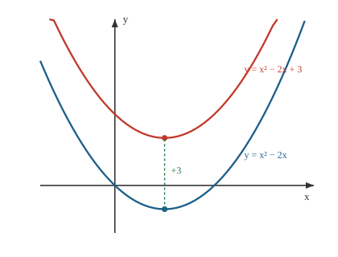
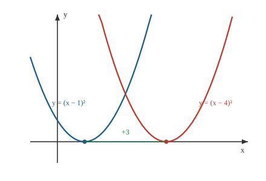

<script>if(location.hostname.endsWith('onrender.com'))location.replace('https://math-sandbox.github.io'+location.pathname+location.search+location.hash)</script>
<section class="theory" data-section="P1-2.5">
<h2>2.5 Transformations of functions</h2>
<p class="src">Based on Cambridge International AS &amp; A Level Mathematics: Pure Mathematics 1 Coursebook (Sue Pemberton), Chapter 2, printed pp.51–55 (translations, Key points 2.6–2.8, Worked examples 2.11–2.12 style, Exercise 2E). Printed pages were read from P1.pdf (printed 51–55 = PDF 63–67). Own wording and new numbers. The opening of 2.5 on printed p.51 previews later reflections and stretches; this section teaches translations only. Teaching stops before 2.6 Reflections, which begins mid-page 55, and before 2.7 Stretches.</p>
<p class="key-words"><strong>Key words:</strong> <em>translation of a graph</em></p>
<p>Two graphs that have exactly the same shape, but occupy different positions, are related by a <strong>translation of a graph</strong>. Adding a constant to the output moves the graph vertically. Replacing \(x\) by \(x-a\) moves the graph horizontally.</p>
<figure>

<figcaption>The graph of \(y=x^2-2x+3\) is a translation of the graph of \(y=x^2-2x\) by the vector \(\begin{pmatrix}0\\3\end{pmatrix}\). The points \((1,-1)\) and \((1, 2)\) are 3 units apart vertically.</figcaption>
</figure>
<p>If, at the same \(x\)-value, the \(y\)-coordinates of two curves differ by a constant \(a\), then the graph of \(y=f(x)+a\) is a translation of the graph of \(y=f(x)\) by the vector \(\begin{pmatrix}0\\a\end{pmatrix}\). A negative \(a\) is a translation downwards.</p>
<figure>

<figcaption>The graph of \(y=(x-4)^2\) is a translation of the graph of \(y=(x-1)^2\) by the vector \(\begin{pmatrix}3\\0\end{pmatrix}\). Replacing \(x\) by \(x-3\) moves the graph 3 units in the positive \(x\)-direction.</figcaption>
</figure>
<p>The graph of \(y=f(x-a)\) is a translation of the graph of \(y=f(x)\) by the vector \(\begin{pmatrix}a\\0\end{pmatrix}\). Combining the two results, the graph of \(y=f(x-a)+b\) is a translation of the graph of \(y=f(x)\) by the vector \(\begin{pmatrix}a\\b\end{pmatrix}\). To obtain the new equation, replace every \(x\) by \(x-a\), and then add \(b\).</p>
<div class="worked-example">
<h4>Worked example 1</h4>
<p class="src">Book: Worked example 2.11 style, printed p.53. New numbers.</p>
<p>The graph of \(y=x^2+4x\) is translated 3 units to the right. Find the equation of the resulting graph, in the form \(y=ax^2+bx+c\).</p>
<ol class="steps">
<li>Replace every \(x\) by \(x-3\): \(y=(x-3)^2+4(x-3)\). <span class="mark">M1</span></li>
<li>Expand: \(y=x^2-6x+9+4x-12=x^2-2x-3\). <span class="mark">A1</span></li>
</ol>
<p class="final"><strong>Answer:</strong> \(y=x^2-2x-3\)</p>
</div>
<div class="worked-example">
<h4>Worked example 2</h4>
<p class="src">Book: Worked example 2.12 style, printed p.53, a combined vector. New numbers.</p>
<p>The graph of \(y=\sqrt{3x}\) is translated by the vector \(\begin{pmatrix}-4\\2\end{pmatrix}\). Find the equation of the resulting graph.</p>
<ol class="steps">
<li>A translation by \(\begin{pmatrix}-4\\2\end{pmatrix}\) means replace \(x\) by \(x-(-4)=x+4\), and add 2. <span class="mark">M1</span></li>
<li>The new equation is \(y=\sqrt{3(x+4)}+2=\sqrt{3x+12}+2\). <span class="mark">A1</span></li>
</ol>
<p class="final"><strong>Answer:</strong> \(y=\sqrt{3x+12}+2\)</p>
</div>
<h3>Common mistakes</h3>
<ul>
<li>Moving the graph left when the equation is \(y=f(x-a)\) with \(a\) positive. Replacing \(x\) by \(x-a\) moves the graph to the right.</li>
<li>Adding \(a\) to \(x\) instead of replacing \(x\) by \(x-a\), or forgetting to expand and simplify when a quadratic form is required.</li>
<li>Treating a stretch or a reflection as if it were a translation. Those transformations are studied in 2.6 and 2.7.</li>
</ul>
<h3>Quick checks</h3>
<div class="quick-check" data-q="QC1">
<h4>Quick check 1</h4>
<p>The graph of \(y=x^2\) is translated by the vector \(\begin{pmatrix}0\\4\end{pmatrix}\). What is the \(y\)-intercept of the resulting graph?</p>
<details><summary>Worked solution</summary>
<ol class="steps">
<li>The new equation is \(y=x^2+4\). When \(x=0\), \(y=4\). <span class="mark">A1</span></li>
</ol>
<p class="final"><strong>Answer:</strong> \(4\)</p>
</details>
</div>
<div class="quick-check" data-q="QC2">
<h4>Quick check 2</h4>
<p>The graph of \(y=2x\) can be translated to the graph of \(y=2x+5\) by the vector \(\begin{pmatrix}0\\k\end{pmatrix}\). What is the value of \(k\)?</p>
<details><summary>Worked solution</summary>
<ol class="steps">
<li>A translation by \(\begin{pmatrix}0\\5\end{pmatrix}\) adds 5 to the output, so \(k=5\). <span class="mark">A1</span></li>
</ol>
<p class="final"><strong>Answer:</strong> \(5\)</p>
</details>
</div>
<div class="quick-check" data-q="QC3">
<h4>Quick check 3</h4>
<p>The graph of \(y=f(x)\) is translated by the vector \(\begin{pmatrix}3\\0\end{pmatrix}\). The point \((1, 2)\) lies on \(y=f(x)\). What is the \(x\)-coordinate of the image of this point?</p>
<details><summary>Worked solution</summary>
<ol class="steps">
<li>A translation by \(\begin{pmatrix}3\\0\end{pmatrix}\) adds 3 to every \(x\)-coordinate, so the image is \((4, 2)\) and the \(x\)-coordinate is 4. <span class="mark">A1</span></li>
</ol>
<p class="final"><strong>Answer:</strong> \(4\)</p>
</details>
</div>
<p class="marks-key"><strong>Marks:</strong> M = method, A = accurate answer (depends on M), B = independent mark. Leave exact values exact.</p>
</section>
